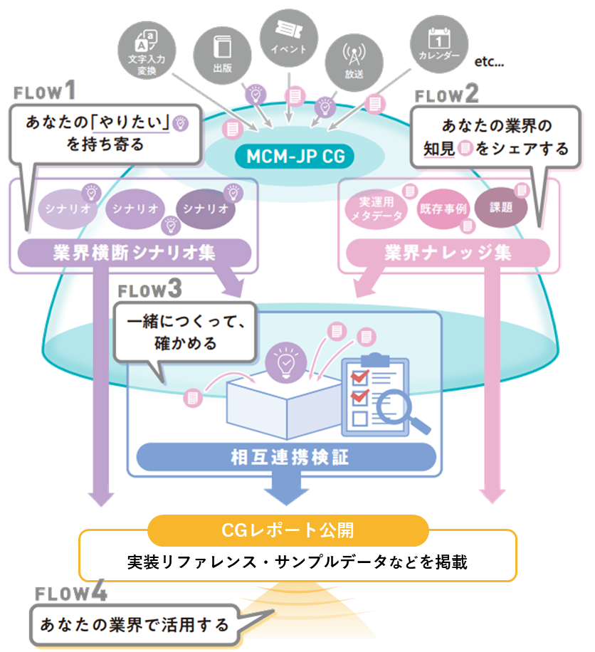

Interop Tokyo 2026 / W3C ブース
MCM-JP CG （Media Content Metadata Japanese Community Group）
業界を越えて、メディアをつなぐ コミュニティ
〜 相互理解から、新たな価値の共創へ 〜
Media Content Metadata Japanese Community Group（MCM-JP CG）は、出版・放送・イベント・文字入力など多様な業界の知見を持ち寄り、メディアコンテンツメタデータの相互運用に取り組む W3C コミュニティグループです。
展示内容
CGレポートで示した業界横断での検証成果と、各業界による価値共創の構想をご紹介します。
各業界による価値共創の構想
- AI エージェントから広がる、メディアの魅力
- カレンダーアプリに、自然に届くメディア情報
- デジタルと実世界をまたぐ、新しい体験

さまざまな業界から参加
ACCESS ／ エム・データ ／ NHK放送技術研究所 ／ オムロンデジタル ／ KADOKAWA ／ 講談社 ／ 集英社 ／ 小学館 ／ ジョルテ ／ WCAP（Web Consortium Asia Pacific） ／ W3C ／ 長崎大学 ／ 北海道大学 ／ Media Do International ほか
ミニセミナー
W3C ブース内で実施するミニセミナーです。事前申込は不要です。
6月12日（金） 14:00〜14:30
MCM-JP CGレポート『メディアコンテンツメタデータの相互運用事例』
〜業界横断の実現性検証と、各業界における協創への展望〜
登壇: NHK 遠藤大礎
ご来場には Interop Tokyo 2026 の 来場登録（Interop 公式）が必要です。
お問い合わせ・参加方法
MCM-JP CG は W3C のコミュニティグループです。業界・所属を問わず、どなたでも参加いただけます。
- メール
- public-mcm-jp@w3.org
- W3C グループページ
- w3.org/community/mcm-jp
- GitHub リポジトリ
- github.com/w3c-cg/mcm-jp